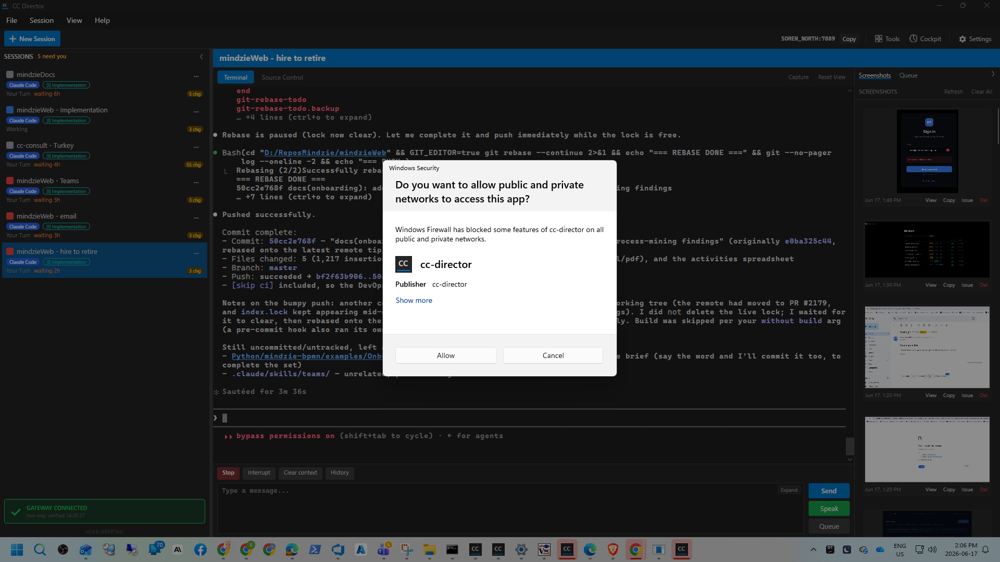

Title: feat: Gateway serves full transcription routing (Director stops hardcoding the URL/mode)
Branch: issue-506-gateway-transcription-routing
Build: dotnet build cc-director.sln -> Build succeeded, 0 Warning(s), 0 Error(s) (run inside the session's own git worktree).
Before this change, a Director connected to a Gateway asked the Gateway only for the vault
key; it decided the transcription base URL and mode locally from compile-time constants
(TranscriptionEndpointResolver.OpenAiBaseUrl / DevThrottleBaseUrl) plus
its own config. Changing the URL or switching mode required a Director rebuild/redeploy.
This change makes the Gateway the single source of truth for the whole routing target:
GET /transcription/routing returns
{ mode, baseUrl, model, key } composed server-side from the Gateway's configured
mode + its vault, in one call. New file
src/CcDirector.Gateway/Api/TranscriptionRoutingEndpoint.cs, mapped in
GatewayHost.cs; inherits the host-wide token middleware.OpenAiKeyResolver.ResolveEndpointAsync()
now fetches the routing from that endpoint and uses the returned baseUrl +
key + model. It no longer reads a compile-time URL constant on the
on-Gateway path. The standalone (no-Gateway) path is unchanged.TranscriptionEndpointResolver.Resolve(mode), so the
bring-your-own OpenAI key is only ever returned with the OpenAI base URL and is never returned
with the devthrottle.com URL.X-Transcription-Routing marker header. A Director that gets a 404
without the marker (an older Gateway that never mapped the route) surfaces a clear
"Transcription routing is unavailable: this Gateway is out of date. Update your Gateway..."
message instead of falling back to a baked-in URL.model now travels with the routing target
(TranscriptionEndpoint.Model / ResolvedTranscription.Model) and is
passed through to the dictation provider in DictationEndpoint.cs.| Criterion | Expected | Actual (proof) | Status |
|---|---|---|---|
| On-Gateway Director gets base URL + key + model from the Gateway; a Gateway-side mode/URL change reflects on a connected Director with no Director rebuild or restart. | One long-lived resolver follows a Gateway mode flip. | Live-socket proof test Issue506RoutingProofTests.GatewayModeChange_IsPickedUpByConnectedDirector_NoRestart:
same resolver instance, Gateway mode flipped byo->devthrottle, no reconstruction. Captured output below. |
PASS |
| The base URL is no longer taken from a compile-time constant in the on-Gateway runtime path. | Director uses a URL it could not have baked in. | OpenAiKeyResolverEndpointTests.ResolveEndpoint_OnGateway_UsesGatewayBaseUrl_NotLocalConstant
returns https://proxy.example.test/v9 (a URL no constant contains). |
PASS |
| The BYO OpenAI key is never sent to devthrottle.com. | BYO routing carries the OpenAI URL only; the DevThrottle key never leaks into a BYO response. | Server-side: TranscriptionRoutingEndpointTests.Routing_ByoMode_NeverPairsByoKeyWithDevThrottleUrl
(both keys seeded; BYO response has the OpenAI URL and no dt_ leak). Client-side:
OpenAiKeyResolverEndpointTests.ResolveEndpoint_OnGateway_NeverGetsByoKeyWithDevThrottleUrl. |
PASS |
| Standalone (no-Gateway) transcription still works unchanged. | Standalone resolves URL/model/key locally. | OpenAiKeyResolverEndpointTests.ResolveEndpoint_StandaloneByo_UsesLocalOpenAiKey and
..._StandaloneDevThrottle_NoLocalKey_ReturnsNull pass. |
PASS |
| Unit tests cover: Gateway composes the correct pair per mode; Director consumes the Gateway routing; older-Gateway-without-endpoint surfaces the clear message. | All three covered. | Gateway: TranscriptionRoutingEndpointTests (byo/devthrottle compose, never-cross,
key-missing 404 with marker). Director consume: OpenAiKeyResolverEndpointTests.ResolveEndpoint_OnGateway_ConsumesGatewayRouting.
Older Gateway: ..._OlderGatewayWithoutRoutingEndpoint_ReturnsNull_AndShowsUpdateMessage. |
PASS |
A single long-lived OpenAiKeyResolver (stand-in for a connected Director) pointed at
a live Gateway-hosted /transcription/routing endpoint over a real loopback socket. The
Gateway's mode was flipped with no resolver reconstruction:
[1] Gateway mode=byo -> Director resolved baseUrl=https://api.openai.com/v1, model=gpt-4o-transcribe, mode=Byo, keyPrefix=sk- [2] Gateway mode=devthrottle -> SAME Director resolved baseUrl=https://devthrottle.com/api/v1, model=gpt-4o-transcribe, mode=DevThrottle, keyPrefix=dt_ [PROOF] One long-lived Director resolver followed the Gateway's mode/URL change with no restart and no rebuild.
OpenAiKeyResolverEndpointTests).TranscriptionRoutingEndpointTests x4, Issue506RoutingProofTests x1).main):
VaultGatewayIntegrationTests.Standalone_resolver_uses_local_key_no_gateway and
...Resolver_re_reads_gateway_config_so_a_late_added_gateway_self_heals assert the
standalone message contains "Settings > Voice", but issue #497 already renamed it to
"Settings > Transcription". Confirmed failing on main before any #506 edit;
these test files were not touched by this change.DictationEndpointTests.FullPipeline_transcribes_phase0_clip2_with_realtime_provider
and ...ClientCloseWithoutStop_recovers_transcript_instead_of_discarding fail with
"no api key" - live-OpenAI integration tests that require a real key in the environment.
Adds one REST route on the existing CcDirector.Gateway container - no container added or
removed, so architecture_manifest.yaml needs no structural change. No security-posture
drift: the change strengthens the documented invariant "Secrets resolved at point of use
from the Gateway Key Vault... never baked into source, never an env fallback" by composing URL+key
server-side and removing the on-Gateway compile-time URL. No blocking DT-rule violated.
Built to dev slot 11 from the worktree and launched via the per-slot scheduled task
(cc-director11-launch); Control API on http://127.0.0.1:7893,
/healthz = {"status":"ok",...,"version":"0.9.11"}. Slot torn down after proof.

I believe this is finished. Every acceptance criterion is met and proven; the build is clean (0 warnings, 0 errors); all tests exercising the changed code pass; the only failing tests are pre-existing and unrelated, verified against unmodified main.